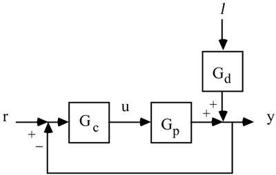
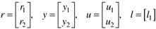
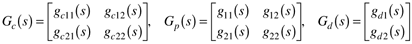
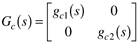
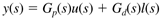
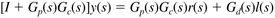
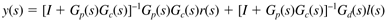
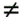
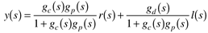

| [ Team LiB ] |
|
14.5 Block-Diagram AnalysisConsider the multivariable block diagram shown in Figure 14-8. Each of the variables shown on this diagram is a vector and the blocks represent matrix transfer functions. That is, for two process outputs, two manipulated inputs, and one disturbance, the corresponding vectors are given below. Figure 14-8. Multivariable block diagram. Setpoints, outputs, manipulated inputs, and the disturbance input are  The controller, process, and disturbance matrices are  Notice that if SISO controllers are used, the controller transfer function matrix is  where gc1(s) and gc2(s) will usually be PID-type controllers. The relationship between inputs (both manipulated and disturbance) and outputs is  Since the error signal is e(s) = r(s) - y(s), we can derive (where I is the identity matrix)  and using matrix inversion to solve for y(s), we find  This last equation is the closed-loop transfer function relationship for multivariable systems. Notice that the order of multiplication is very important. In general, GP(s)Gc(s)  Gc(s)Gp(s). This is clear if, for example, Gp is a 4 x 3 matrix and Gc is a 3 x 4 matrix. Recall that the SISO closed-loop transfer function is  For SISO systems, the order of multiplication does not matter; for MIMO systems, it is crucial. |
| [ Team LiB ] |
|